Sistema P.A.
Sistema acorde a las dimensiones del recinto. Parlantes estéreo de alta fidelidad.
Mínimo: 115 dBA SPL (promedio).
Cajas preferidas: Meyer Sound MILO, L-Acoustics V-DOSC, JBL Vertec, NEXO.
Ayacucho · Perú · 1993
“Nosotros no rockeamos el ande, andinizamos el rock.”
— Marcos Maizel, guitarrista y director musical
Sobre la banda
Uchpa, es una banda de Rock Blues fusión en quechua con más de 25 años de carrera en la escena musical que no solo fusiona Rock Blues con huayno sino también jarawis, huaylias, pumpines, Danza de Tijeras y más expresiones musicales andinas. "Nosotros no rockeamos el ande, andinizamos el rock" explica Marcos Maizel, Productor Musical y guitarrista de la banda.
Además de ofrecer su arte, la banda busca también crear conciencia en las nuevas generaciones sobre nuestro presente, pasado y futuro andino y el idioma quechua al ofrecer, en un nuevo formato, música que en algunos casos ni siquiera tiene registro oficial, rescatando temas de chacra huaynos (como Corazón Contento y Chachaschay). El mensaje de Uchpa es identidad.
Datos clave
La banda

Productor musical y guitarra · +25 años

Vocalista y fundador

Danzante de tijeras

Waqrapuku (trompa de cuerno andina)

Guitarra rítmica

Bajo

Batería
Patrimonio Cultural Inmaterial · UNESCO 2010
La danza de tijeras es una expresión ritual de origen prehispánico, practicada tradicionalmente en las comunidades quechuas del sur andino peruano: Ayacucho, Huancavelica, Apurímac y el norte de Arequipa. El Estado peruano la declaró Patrimonio Cultural de la Nación en 1995 y, en noviembre de 2010, la UNESCO la inscribió en la Lista Representativa del Patrimonio Cultural Inmaterial de la Humanidad. Sus intérpretes, los danzaq, descienden de los tusuq laykas, oficiantes rituales prehispánicos perseguidos durante la colonia. La danza opera como un duelo coreográfico llamado atipanakuy, acompañado por arpa y violín, donde el danzante prueba su destreza física y su vínculo con los apus y la pachamama. José María Arguedas la inmortalizó en la agonía de Rasu Ñiti (1962).
Danza de Tijeras · Parte 2
En UCHPA, el danzaq no es recurso visual ni acento exótico. Es un integrante más de la banda, con función escénica y sonora propia: sus tijeras aportan un pulso metálico que dialoga con la guitarra eléctrica, y su presencia conecta el rock con la matriz ritual andina de donde vienen las letras en quechua. El danzante se apropia de esa intención y la refleja en el escenario.
Noviembre 2015
Sociedad Académica Universitaria, por aporte cultural, artístico y difusión del idioma quechua.
Por su trabajo de difusión del idioma quechua.
Identidad y propósito
La misión de Uchpa es rescatar la cultura andina con el quechua fusionado con el Rock Blues a través de la música, vestimenta y colores que se representan en cada show, garantizando de este modo, que el mensaje del concierto brindado fue identidad: de dónde venimos y quiénes somos para no olvidarnos el idioma quechua que es nuestro presente, pasado y futuro.
+30 años de carrera
Festival Internacional de las Culturas Indígenas · México
Festival Selvámonos · Perú
Mistura · Perú
Plaza de Armas de Cusco · Perú
Festival Internacional de Potosí · Perú
Lima Vive Rock · Perú
Con la Orquesta Sinfónica del Cusco · Perú
Gran Teatro Nacional — película de UCHPA
Vivo X El Rock 6 · el festival más grande del Perú
De Mongolia a la Patagonia · México
Cosquín Rock, escenario principal con bandas como Offspring · Argentina
Feria Internacional del Libro de Guadalajara · México
UCHPA y Rata Blanca en Huancayo y Lima · Perú
5 álbumes · 1994–2006
“Gritando en el viento”
“Viviendo en paz”
“Respiro diferente”
Recopilatorio
Registro en directo
Videos destacados
Show en vivo
Uchpa, durante la hora completa de show, desplegó su gran fusión visual tanto en sonido, luces, colores y energía en el escenario donde minuto a minuto se ve y se siente: Perú.
El vocalista, además de su atuendo rockero, utiliza un sombrero de Danza de Tijeras junto con una falda de cintas de colores, las cuales representan a los solteros en las fiestas tradicionales dentro de la cultura andina. Los guitarristas tienen también sus trajes y elementos característicos: uno de ellos, lleva una camisa africana que representa la conexión de la cultura y raíces afroamericanas con el blues.
Otro de los integrantes de la banda, toca los cachos del toro (Waqrapuku), elemento de la cultura andina que representa un llamado al pueblo para invitarlos a una fiesta. Asimismo, utiliza el poncho y sombrero andino característicos.
Puesta en escena · Parte 2
La banda también tiene como parte de sus integrantes a un maestro Danzante de Tijeras: “Jechele”, reconocido por el Ministerio de Cultura como Personalidad Meritoria de la Cultura, el cual cuenta con el primer tema propio fusionando el rock con la Danza de Tijeras, siendo esta danza declarada como Patrimonio Cultural Inmaterial de la Humanidad por la Unesco.
Producción
Sistema acorde a las dimensiones del recinto. Parlantes estéreo de alta fidelidad.
Mínimo: 115 dBA SPL (promedio).
Cajas preferidas: Meyer Sound MILO, L-Acoustics V-DOSC, JBL Vertec, NEXO.
FOH y monitoreo: Yamaha PM5D / M7CL, DiGiCo SD8, Avid VENUE D-Show o equivalente.
6 mezclas · 6 monitores de piso (Meyer Sound, JBL o NEXO) · 2 sidefills · 1 drumfill.
Batería: 5 piezas Yamaha Oak Custom, Pearl Master Custom, Mapex, Tama o DW Collector's.
Bajo: Cabezal Ampeg SVT 4 + cabinet 4x10 y 1 cabinet de 15.
Guitarras: 2 cabezales Marshall JCM 900 + 2 cabinets 4x12 1960 A y 1 cabinet 4x12 1960 B.
Andinos: waqrapuku, charango, quena y zampoña los provee la banda.
Mínimo 2 camerinos: uno para la banda y uno para el danzante de tijeras (por vestuario ritual y preparación escénica).
Técnico de sonido: Sandro García C.
Correo: dumagosa@hotmail.com
Teléfono: +51 987 159 687
Producción · Setup técnico
Disposición estándar de la banda en vivo · 6 mezclas de monitoreo

Booking · Prensa
Marcos Maizel
MAS FOR YOU · Lucero Gómez Ortiz
© UCHPA · Rock Inka